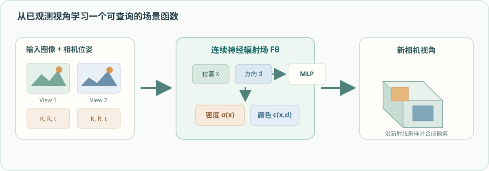
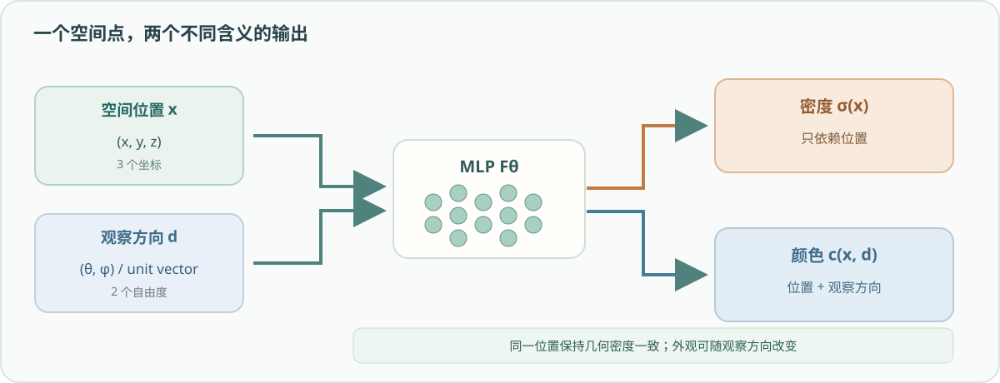
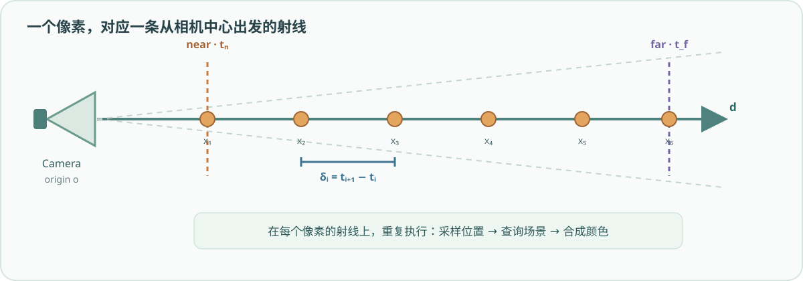
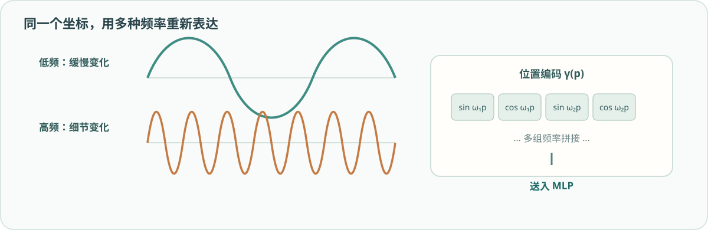
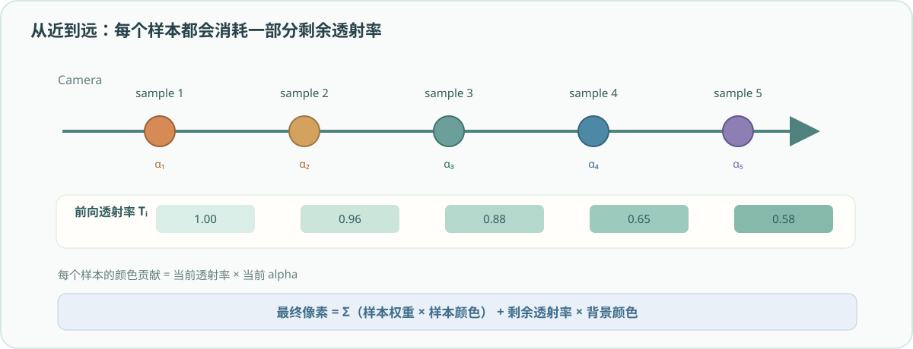
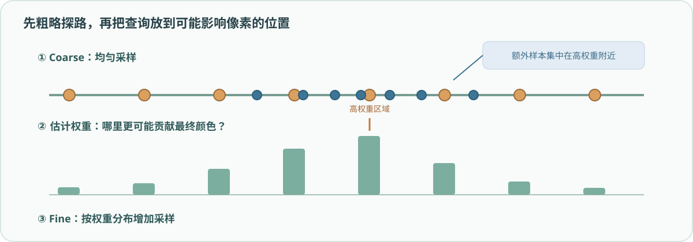
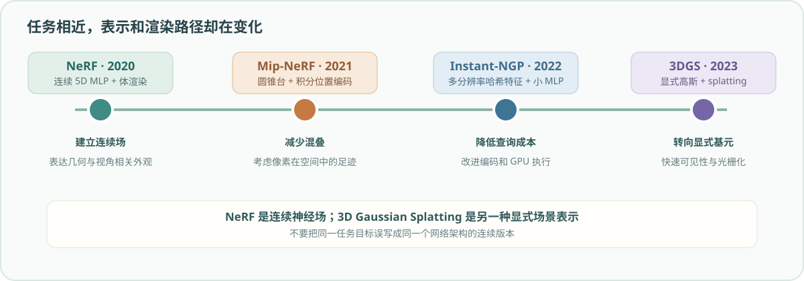

Understanding NeRF
给你几十张从不同角度拍摄的照片，能不能学出一个连续的三维场景，再从一台从未出现过的相机位置生成新图像？NeRF 用一个神经网络回答这个问题。

01 · 从照片到一台从未存在过的相机
先想象你围绕一张桌子拍摄了 40 张照片。每张照片都只记录一个相机位置看到的二维投影：桌面挡住了什么、椅子在画面中的位置、灯光如何反射。你希望把相机移动到两张照片之间的一个新位置，得到一张自然的新画面。
传统思路可能是先恢复三角网格、贴图或体素，再用图形学渲染。但这些表示需要显式描述几何表面或离散空间。NeRF 的关键转变是：把场景本身看成一个连续函数，让神经网络回答“这个位置、从这个方向看过去，应该是什么颜色？这里有多大概率挡住光线？”
输入不是只有 RGB
除了多张图像，还需要每张图对应的相机内参、外参（相机位姿）以及场景的近远边界。没有可靠的相机几何，像素就无法正确投到三维射线上。
输出不是一张完整 3D 网格
网络可以在任意连续坐标处被查询。渲染时只对目标相机真正经过的射线采样，不必提前把整个空间切成固定体素。
因此，NeRF 的问题不是“如何把照片拼起来”，而是“如何学习一个能同时解释所有已观测视角的场景函数”。
02 · NeRF 学的是一个连续五维场景函数
对空间中的一个点，记它的位置为 x=(x,y,z)。同一个点从不同方向看，颜色可能不同：例如金属表面的高光会随相机移动。因此还要提供观察方向 d。论文用球坐标角度 (θ,φ) 描述方向，实际网络中用三维单位向量表示。
这里有两个输出，含义不要混淆：
- 密度 σ(x)：描述射线穿过这个位置时被吸收/终止的强度。它只依赖空间位置，不随着观察方向改变。
- 颜色 c(x,d)：描述从方向 d 观察位置 x 时的 RGB 辐射。它允许表达镜面反射等视角相关外观。

NeRF 不是直接输出“这里是一个三角形面片”。它输出的是连续空间中的体密度和方向相关辐射；表面感、遮挡和像素颜色，是通过沿射线积分后表现出来的。
03 · 从一个像素，反向发射一条 Camera Ray
现在固定目标相机上的一个像素。相机内参告诉我们像素对应的成像方向；相机外参把这个方向从相机坐标系转换到世界坐标系。于是我们得到一条从相机中心出发的射线。
o 是相机中心，d 是单位方向，t 是沿射线移动的距离。我们只在近端 tₙ 与远端 t_f 之间查询场景。对这条射线采样得到一串三维位置 x_i=r(t_i)，每个位置都送入 NeRF 查询颜色与密度。

训练时，论文将每条射线的近远区间分成若干段，并在每段内随机取一点（stratified sampling）。这样不会让网络永远只看到固定网格上的坐标，也能在训练过程中覆盖连续空间。
04 · MLP 每次查询，究竟输出什么？
原始 NeRF 不是 CNN。它用一个全连接 MLP 表示每个场景：位置编码后的空间坐标先经过 8 层、每层 256 个通道的 ReLU 全连接层，得到密度 σ 和一个 256 维特征；再把该特征与位置编码后的观察方向拼接，经过一个 128 通道的 ReLU 层，输出 RGB。
空间分支
输入：位置编码 γ(x)。
输出：密度 σ(x) 与中间特征 h(x)。
意义：同一位置无论从哪个视角被查询，密度都相同。
外观分支
输入：h(x) 与方向编码 γ(d)。
输出：颜色 c(x,d)。
意义：让网络能够表达镜面高光等方向相关的辐射变化。
论文的消融实验专门移除了 view dependence：没有方向输入时，模型难以复现推土机履带上的镜面反射。这说明方向不是一个可有可无的装饰参数，而是外观建模的一部分。
05 · Positional Encoding：让 MLP 看见细节
如果把原始坐标直接交给普通 MLP，网络往往先学会平滑、低频的变化，却不容易拟合细密纹理、尖锐边缘和高频几何。NeRF 在坐标进入 MLP 之前，先把每个标量映射到一组不同频率的正弦、余弦特征。
低频分量描述缓慢变化，高频分量让模型能够表达更细的变化。原论文对位置 x 使用 L=10，对观察方向 d 使用 L=4。注意：它和 Transformer 的正弦位置编码形式相似，但目的不同——Transformer 的位置编码告诉模型 token 在序列中的位置；NeRF 的编码是把连续空间坐标展开成更容易拟合高频函数的特征。

06 · Volume Rendering：前面的雾会挡住后面的颜色
现在每个采样点都有颜色 cᵢ 和密度 σᵢ。问题变成：怎样把沿射线的一串三维属性合成为一个二维像素？关键不只是把颜色平均，而是考虑前面的样本已经挡住了多少光。
连续形式中，透射率 T(t) 表示光线从射线起点走到 t、尚未被前方粒子吸收的比例。体渲染把每个位置的密度和颜色，按剩余透射率加权后积分：
实际计算必须离散化。相邻采样点间距为 δᵢ=tᵢ₊₁−tᵢ。密度 σᵢ 与距离 δᵢ 一起决定该区间的 alpha：
αᵢ 是当前小区间的遮挡/吸收比例；Tᵢ 是到达它之前还剩下多少光；wᵢ 才是该样本最终对像素颜色的贡献权重。越靠前、密度越大的样本，通常越容易压低后方样本的权重。
最终颜色可以写成样本颜色的加权和，再加上没有被任何样本吸收的背景：

交互实验：密度变大，后面的颜色还看得见吗？
固定五个采样点的颜色和间距，只改变所有样本的密度倍率。观察每个点的贡献权重，以及最终像素 RGB 如何变化。这个数值实验是帮助理解体渲染的教学算例，不是论文数据。
合成后的像素颜色
RGB (191, 209, 218) · #BFD1DA
每个采样点的颜色贡献权重
背景剩余透射率：0.560
当前倍率为 1.00×。样本 3 的贡献最大；其前方样本已经消耗了一部分透射率，最后仍有约 56% 的光到达背景。
07 · Hierarchical Sampling：把计算预算花在重要位置
如果每条射线都均匀采样很多点，会反复查询大量空空间；如果采样太少，又可能跳过物体表面和细节。原始 NeRF 用 coarse-to-fine 两级采样缓解这个问题。
- Coarse：先在近远区间内分层均匀取样，得到粗略的颜色、密度与权重。
- 构造分布：把粗网络的权重归一化，形成沿射线的分段概率密度函数（PDF）。
- Fine：从这个分布中抽取额外位置，与初始样本合并后交给 fine 网络，重新进行体渲染。

原论文实验中，coarse 网络使用 Nc=64 个样本，fine 阶段再增加 Nf=128 个样本。这个配置是论文中的实验设置，不是所有现代 NeRF 实现必须照搬的固定参数。
08 · 训练闭环：让所有相机看到同一个场景
NeRF 的训练目标很直观：从训练图像中抽取一批像素射线，使用当前网络渲染这些射线，再把渲染颜色与真实像素颜色比较。因为体渲染公式可微，误差可以沿着颜色权重、密度和 MLP 参数反向传播。
为什么 coarse 和 fine 都要算损失？因为 coarse 网络的权重分布负责引导 fine 阶段在哪里增加样本；同时约束 coarse 输出，也能让这个采样分布在训练中保持有用。
原论文的数据条件
每个场景单独训练。需要 RGB 图像、相机内参/位姿和场景边界；合成数据使用已知参数，真实数据使用 COLMAP 估计相机参数。
原论文训练规模
每批随机抽取 4096 条射线；单场景通常训练 100k–300k 次迭代，在单张 NVIDIA V100 上约 1–2 天。这个数字只描述 2020 年论文的原始配置。
09 · 原论文实验：哪些结论有数据支持？
原论文 Table 1 在多个新视角合成基准上比较 PSNR、SSIM 和 LPIPS。PSNR/SSIM 越高越好，LPIPS 越低越好。下面只列出用于说明结论的关键行，数值来自论文 Table 1，而不是重新运行实验。
| 数据集 | 方法 | PSNR ↑ | SSIM ↑ | LPIPS ↓ |
|---|---|---|---|---|
| Realistic Synthetic 360° | NeRF | 31.01 | 0.947 | 0.081 |
| LLFF | 24.88 | 0.911 | 0.114 | |
| SRN | 22.26 | 0.846 | 0.170 | |
| Real Forward-Facing | NeRF | 26.50 | 0.811 | 0.250 |
| LLFF | 24.13 | 0.798 | 0.212 |
原论文 Table 1，Realistic Synthetic 360° 与 Real Forward-Facing 两组结果。Real Forward-Facing 上，NeRF 的 PSNR/SSIM 更高，但 LLFF 的 LPIPS 更低；不同指标衡量不同性质，不能只摘取其中一个指标宣布全面胜出。
消融实验告诉我们什么？
在 Realistic Synthetic 360° 的 Table 2 中，完整模型的 PSNR/SSIM/LPIPS 为 31.01 / 0.947 / 0.081；移除位置编码后变为 28.77 / 0.924 / 0.108。移除视角相关颜色和分层采样也会降低表现。它支持的结论是：位置编码、方向相关外观和重要性采样共同构成了原始方法的关键设计，而不是说其中任一组件在所有数据集上都能独立保证最好结果。
实验规模也值得记住：论文的 Realistic Synthetic 360° 数据集包含 8 个复杂合成物体，每个场景 100 张训练图像、200 张测试图像，分辨率为 800×800；Real Forward-Facing 包含 8 个真实场景，每个场景 20–62 张图像，并留出 1/8 测试图像。
10 · NeRF 的边界：它不是万能的三维扫描仪
- 相机参数很重要：相机位姿或内参不准，射线就会落在错误的位置，多视角监督无法正确对齐。原始方法依赖已知或预估的相机参数。
- 静态场景假设：如果物体在不同照片之间移动，模型可能把运动误解释成模糊几何或不一致的密度。动态场景需要额外的时间/运动表示。
- 观察覆盖不足：被遮挡或从未拍摄到的区域缺少约束；网络可以给出一个平滑的猜测，但不代表它恢复了真实几何。
- 查询昂贵：每条射线需要多次 MLP 查询，训练与渲染都可能很慢。分层采样减少了无效查询，但没有消除逐点网络评估的基本成本。
- 不是直接可编辑的网格：场景知识主要编码在网络参数中。若下游任务需要碰撞检测、CAD 编辑或明确拓扑，通常还要额外提取几何并处理表面质量。
因此，NeRF 的强项是从多视角图像中学习连续外观和生成新视角；它并不自动解决相机标定、动态物体、完整几何恢复和实时渲染等所有问题。
11 · 从 NeRF 到后续方法：同一个目标，不同的表示和计算路径
NeRF 之后的研究大致沿着三条路线推进：减少采样带来的混叠；降低神经场查询成本；或者干脆换一种更适合实时渲染的场景表示。

| 方法 | 主要变化 | 主要解决的问题 |
|---|---|---|
| NeRF · 2020 | 连续 5D MLP 场景函数 + 体渲染 | 从稀疏多视角图像学习高质量新视角 |
| Mip-NeRF · 2021 | 圆锥台像素足迹 + Integrated Positional Encoding | 多尺度观察下的 aliasing 与模糊 |
| Instant-NGP · 2022 | 多分辨率可训练哈希特征 + 小 MLP + 融合 CUDA kernel | 降低神经图形基元的训练和查询成本 |
| 3D Gaussian Splatting · 2023 | 显式各向异性 3D Gaussians + 可见性感知 splatting | 高质量实时新视角渲染 |
其中 3D Gaussian Splatting（3DGS）尤其需要单独理解：它不是把 NeRF 的 MLP 换成另一种 MLP，而是直接用一组可优化的三维高斯椭球表示场景，并通过快速 splatting/rasterization 渲染。它与 NeRF 解决相近任务，但数据结构与渲染路径不同。
截至 2026 年的综述也指出，3DGS 已成为新视角合成的重要主流框架；与此同时，NeRF 及其隐式/混合神经场变体仍在特定表示和应用场景中持续发展。因此，学习 NeRF 仍然重要：它提供了理解连续场景函数、可微体渲染和后续神经场方法的基础。
12 · 用一段代码验证体渲染的核心不变量
下面的纯 Python 函数只实现一条射线的前向 alpha 合成。它不是完整 NeRF：没有相机模型、MLP、位置编码、训练循环或分层采样。它的价值是把论文中的一个关键公式变成可以运行和测试的数值过程。
from math import expm1
def render_ray(samples, background=(1.0, 1.0, 1.0)):
rgb = [0.0, 0.0, 0.0]
transmittance = 1.0
weights = []
for sigma, color, delta in samples: # near -> far
alpha = -expm1(-sigma * delta)
weight = transmittance * alpha
weights.append(weight)
for channel in range(3):
rgb[channel] += weight * color[channel]
transmittance *= 1.0 - alpha
pixel = tuple(
rgb[c] + transmittance * background[c]
for c in range(3)
)
return pixel, weights, transmittance仓库中的完整示例增加了输入范围检查和数值断言，位于 posts/architectures/nerf/volume_rendering.py；对应测试位于 tests/test_nerf_volume_rendering.py。测试覆盖零密度背景、前景遮挡、权重质量守恒和非法输入。
13 · 把整篇论文压缩成四个心智模型
① 场景是一张可查询的函数
位置告诉网络“在哪里”，方向告诉网络“从哪边看”。网络返回密度与方向相关颜色。
② 像素是一条射线的积分
一个像素不是一个三维点。它是沿相机射线采样后，通过透射率和密度加权合成的结果。
③ 位置编码补足高频表达
多尺度正余弦特征帮助 MLP 表达细节；这和 Transformer 的 token 顺序编码不是同一个目的。
④ 分层采样节省查询预算
粗网络先估计哪里重要，细网络再把额外采样放到高权重区域，而不是把计算平均浪费在空空间。
理解 NeRF，真正需要掌握的不是“神经网络把照片变成 3D”这句口号，而是连续表示 → 射线查询 → 可微体渲染 → 多视角误差反传这条完整因果链。
14 · 参考文献与进一步阅读
- 原始论文：Ben Mildenhall, Pratul P. Srinivasan, Matthew Tancik, Jonathan T. Barron, Ravi Ramamoorthi, Ren Ng. NeRF: Representing Scenes as Neural Radiance Fields for View Synthesis. ECCV 2020. 重点阅读 Sections 3–6、Equations 1–6、Tables 1–2。
- 抗锯齿扩展：Jonathan T. Barron et al. Mip-NeRF: A Multiscale Representation for Anti-Aliasing Neural Radiance Fields. ICCV 2021。
- 高效神经图形基元：Thomas Müller et al. Instant Neural Graphics Primitives with a Multiresolution Hash Encoding. SIGGRAPH 2022。
- 显式高斯表示：Bernhard Kerbl et al. 3D Gaussian Splatting for Real-Time Radiance Field Rendering. ACM Transactions on Graphics, 2023。
- 工程解释与实现：Nerfstudio · NeRF。适合继续理解采样器、场表示、体渲染组件和常见输入假设。
- 领域综述：Kyle Gao et al. Neural radiance fields in 3D vision: A comprehensive review. Computational Visual Media, 2026。